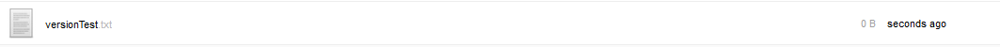
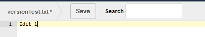
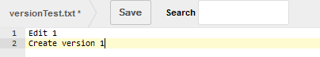
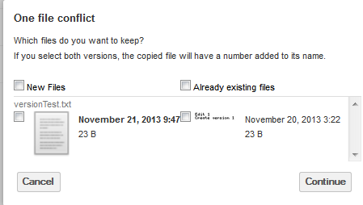
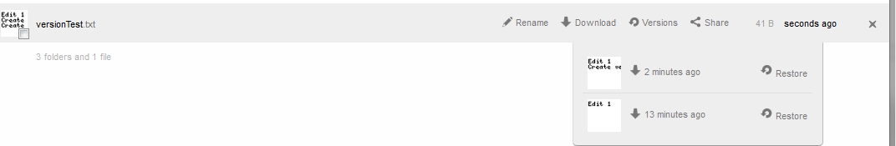

Utilization¶
The versions app, when enabled, automatically creates a new version each time an existing, non-empty file is saved.
Initial File creation¶
Create a file on the ownCloud server – either directly via the browser, an upload, or a file sync from the client. In this example, the file versionText.txt was created via the web browser.

Note¶
Since this file was initially created via the web browser, it is an empty file.
Edit the file¶
Edit the file through the web browser.

And save.
Notes¶
Editing an empty file, as in this instance, for the first time, does not create a new version.
Create version¶
Edit the non-zero byte file either via the web browser, via the sync client or via an upload.

And save.
Notes¶
When performing an upload of a file which already exists on the server, a dialog box appears asking whether to keep the existing file or the new file.

In order to create a version, the New File must be selected. If the Existing File is selected, the file is not replaced hence no new version is created.
Accessing Versions¶
In order to view what versions exist for a given file, hover over the line containing the file and select Versions on the right side.

In this case, there are two previous versions of versionTest.txt . The thumbnail and creation time can be used to identify what was in the file in that version.
Reverting to a different version¶
To revert to a previous version, simply select the restore next to the version as seen in .
Notes¶
In the instance where a file is reverted to another version, the “existing” version of the file is versioned and can be reverted at a later date.
Sharing and Versions¶
If user-A shares a file with user-B, user-B may revert the file to any previous version. If user-B modifies the file, a new version is created.